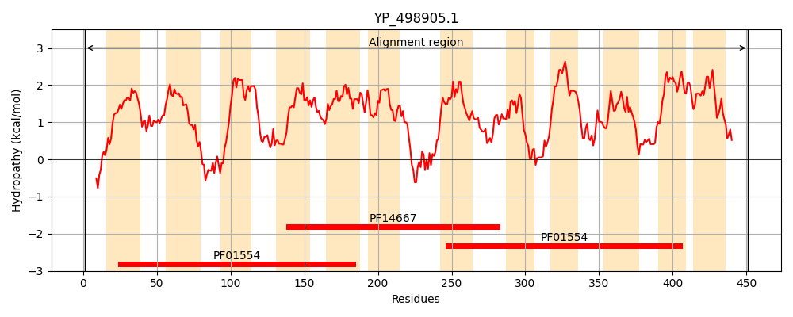
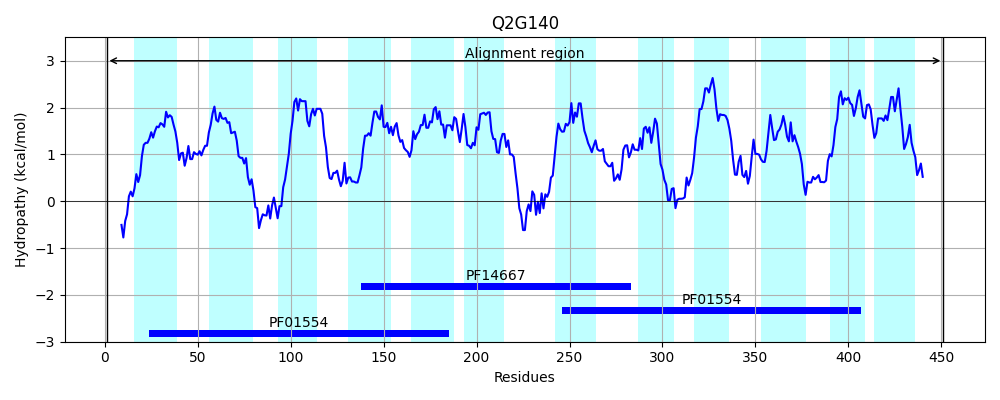
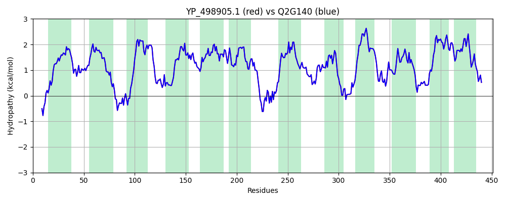

Hit Accession: Q2G140
Hit TCID: 2.A.66.1.13
Hit Description: gnl|BL_ORD_ID|13239 gnl|TC-DB|Q2G140|2.A.66.1.13 Multidrug export protein mepA - Staphylococcus aureus (strain NCTC 8325).
Mach Len: 451
e:0.000000
Query TMS Count : 12
Hit TMS Count: 12
TMS-Overlap Score: 13.650000
Predicted Substrates:CHEBI:29696;tigecycline, CHEBI:87211;fluoroquinolone antibiotic
BLAST Alignment:
Score: 2218 , Bit scores: 858 bits, E-value: 0.0e+00, Alignment length: 451, Percentage identity: 100
Query: 1 MKDEQLYYFEKSPVFKAMMHFSLPMMIGTLLSVIYGILNIYFIGFLEDSHMISAISLTLPVFAILMGLGNLFGVGAGTYISRLLGAKDYSKSKFVSSFSIYGGIALGLIVILVTLPFSDQIAAILGARGETLALTSNYLKVMFLSAPFVILFFILEQFARAIGAPMVSMIGMLASVGLNIILDPILIFGFDLNVVGAALGTAISNVAAALFFIIYFMKNSDVVSVNIKLAKPNKEMLSEIFKIGIPAFLMSILMGFTGLVLNLFLAHYGNFAIASYGISFRLVQFPELIIMGLCEGVVPLIAYNFMANKGRMKDVIKAVIMSIGVIFVVCMSAVFTIGHHMVGLFTTDQAIVEMATFILKVTMASLLLNGIGFLFTGMLQATGQGRGATIMAILQGAIIIPVLFIMNALFGLTGVIWSLLIAESLCALAAMLIVYLLRDRLTVDTSELIEG 451
MKDEQLYYFEKSPVFKAMMHFSLPMMIGTLLSVIYGILNIYFIGFLEDSHMISAISLTLPVFAILMGLGNLFGVGAGTYISRLLGAKDYSKSKFVSSFSIYGGIALGLIVILVTLPFSDQIAAILGARGETLALTSNYLKVMFLSAPFVILFFILEQFARAIGAPMVSMIGMLASVGLNIILDPILIFGFDLNVVGAALGTAISNVAAALFFIIYFMKNSDVVSVNIKLAKPNKEMLSEIFKIGIPAFLMSILMGFTGLVLNLFLAHYGNFAIASYGISFRLVQFPELIIMGLCEGVVPLIAYNFMANKGRMKDVIKAVIMSIGVIFVVCMSAVFTIGHHMVGLFTTDQAIVEMATFILKVTMASLLLNGIGFLFTGMLQATGQGRGATIMAILQGAIIIPVLFIMNALFGLTGVIWSLLIAESLCALAAMLIVYLLRDRLTVDTSELIEG
Sbjct: 1 MKDEQLYYFEKSPVFKAMMHFSLPMMIGTLLSVIYGILNIYFIGFLEDSHMISAISLTLPVFAILMGLGNLFGVGAGTYISRLLGAKDYSKSKFVSSFSIYGGIALGLIVILVTLPFSDQIAAILGARGETLALTSNYLKVMFLSAPFVILFFILEQFARAIGAPMVSMIGMLASVGLNIILDPILIFGFDLNVVGAALGTAISNVAAALFFIIYFMKNSDVVSVNIKLAKPNKEMLSEIFKIGIPAFLMSILMGFTGLVLNLFLAHYGNFAIASYGISFRLVQFPELIIMGLCEGVVPLIAYNFMANKGRMKDVIKAVIMSIGVIFVVCMSAVFTIGHHMVGLFTTDQAIVEMATFILKVTMASLLLNGIGFLFTGMLQATGQGRGATIMAILQGAIIIPVLFIMNALFGLTGVIWSLLIAESLCALAAMLIVYLLRDRLTVDTSELIEG 451 | Protein Hydropathy Plots: |
|---|
|  |  |
Pairwise Alignment-Hydropathy Plot:
|
|---|
|  |